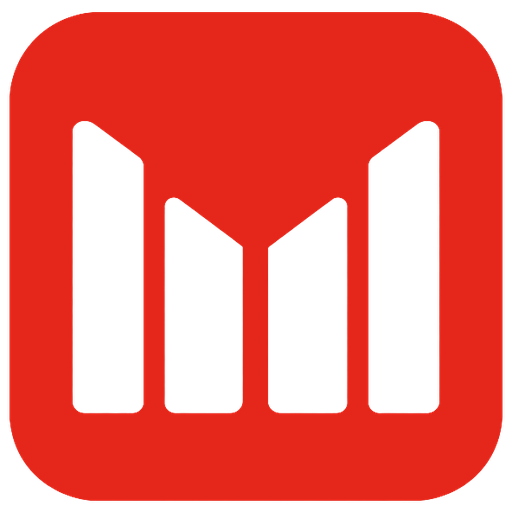

The bar-M, drawn by hand from G6.
Two masters from one grid. The tile carves the M out of Signal, for favicons, app icons and avatars. The untiled symbol is the same four bars in Signal, for use beside the wordmark. The 16px favicon is hinted separately to whole pixels.
Masters


Construction
Source and master

Kept
Four bars, the knockout, the rounded tile and G6's 3:1 bar to gap proportion.
Changed
The tops now sit on one continuous V instead of G6's stepped cuts. Bar corners are square to match Host Grotesk's cut terminals. Bar widths are equal, where G6's inner bars were slightly wider.
Small sizes
 Maximum Leverage
Maximum Leverage
Favicon
Scaling the master down to 16px blurs the 0.8px gaps. The hinted cut uses 2px bars, 1px gaps, a 2px centre gap and 45° tops, so every edge lands on a pixel.
Avatar
For round avatars, use the untiled symbol on Carbon. The circle crops the tile's corners and leaves a red square inside a circle.
With the wordmark
Maximum LeverageMaximum LeverageMaximum LeveragePrimary lockup
Untiled symbol at cap height plus a little, with a gap of about 0.4 em. It works on Carbon and on Chalk without changes.
Tile lockup
The tile beside the wordmark is heavier. Keep it for app-style contexts where the icon and name appear together.
Files
| ml-symbol.svg | Untiled master, 60 × 48. Beside the wordmark, in video and anywhere on Carbon or Chalk. |
| ml-symbol-tile.svg | Tile master, 80 × 80, bars cut through to transparent. |
| ml-symbol-tile-carbon.svg | Tile on a Carbon square, for places that flatten transparency. |
| ml-favicon-16.svg / .png | Hand-hinted 16px favicon. |
| ml-favicon-32.png | 32px favicon from the tile master. |
| ml-symbol-tile-180.png, -512.png | Apple touch icon and app or PWA icon. |
| ml-avatar.svg, -400.png | Untiled symbol centred on Carbon, safe for round crops. |
| build.py | Generates every SVG from the grid numbers above. Change a number there and rerun it; never edit the paths by hand. |